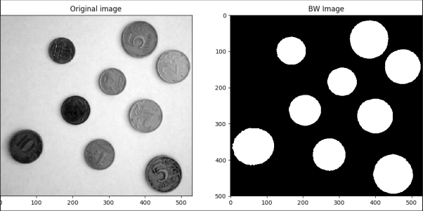

Компьютерное зрение — технология, которая позволяет машинам находить, отслеживать и классифицировать информацию, извлекаемую из изображения
Формирование полезных выводов относительно объектов и сцен реального мира на основе изображений, полученных с помощью датчиков
>>> print("Hello World")
>>> a = 2
>>> b = 3
>>> print(a / b)
>>> d = a * b
>>> s = "Loooool"
>>> print(s + s)
Что такое a, b, d, s?
>>> a = 2
>>> type(a)
>>> b = 2.5
>>> type(b)
>>> c = 4 / 2
>>> type(c)
>>> 1 + 2
>>> 2 - 3
>>> 3 * 4
>>> 5 / 6
>>> 7 % 6
>>> 2 ** 10
>>> int(12.5)
>>> float(10)
>>> a = True
>>> b = 5 > 6
>>> c = False
>>> a = [1, 2, 18, 24]
>>> b = ['lol', ['kek'], 123]
>>> type(a)
>>> a = [1, 2, 18, 24]
>>> a[-1]
>>> a[0]
>>> a[0:2]
>>> a[-2:]
>>> a = [1, 2, 18, 24]
>>> a.append('LOOOOOOL')
>>> print(a)
>>> a.pop()
>>> print(a)
>>> a = 'Lol'
>>> b = "Kek"
>>> c = """Che
burek"""
>>> d = '''L
ol
'''
>>> a = {1: 1, 2: 4, 3: 9}
>>> b = {'UP': (0, -1), 'DOWN': (0, 1), 'LEFT': (-1, 0), 'RIGHT': (1, 0)}
>>> a[2]
>>> b['UP']
>>> list(a)
>>> list(b.values())
>>> 'LEFT' in b
>>> a = 5
>>> if a < 10:
>>> print('YES')
>>> else:
>>> print('NO')
>>> for i in range(10):
>>> print(i)
>>> for i in range(1, 10, 2):
>>> print(j)
>>> pows = [i ** 2 for i in range(50)]
>>> def pow(a, b):
>>> return a ** b
>>> pow(2, 10)
>>> import numpy as np
>>> a = np.zeros((5, 10))
>>> print(a)
>>> b = a + 5
>>> print(b)
>>> c = b / 2
>>> print(c)
>>> import matplotlib.pyplot as plt
>>> a = np.zeros((100, 100, 3), dtype='uint8')
>>> a[:, ::4, ::2] = 255
>>> plt.imshow(a)
>>> plt.show()
Каждый пиксель изображения может быть представлен только одним из двух цветов
Процесс отделения пикселов относящихся к переднему плану (foreground pixels) от фоновых пикселей (background pixels)
